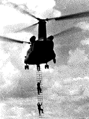
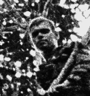
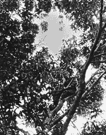
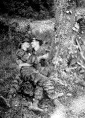
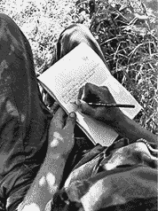
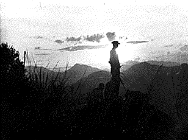

Though unlike the Cambodians and the American soldiers, I was neither dead nor physically maimed, I felt part of the wreckage, too.
How has it changed me? I am very careful about making promises. All those Cambodians and Laotians and Vietnamese thought we had made them a promise.
They also thought America could perform miracles. The age of those miracles is over. Whatever pledges I make now as an individual are those that I am definitely going to keep
I look after those close to me. I have learned that life is one-on-one. You don't save the world, or even a large chunk of it. What you can do is to try to help people, one at a time.
As a person, I'm still an optimist, believing in the possibilities of
individuals. As a journalist, I'm warier, much more
skeptical.
Sydney H. Schanberg won a Pulitzer Prize as a New York Times correspondent covering the takeover of Cambodia by the Khmer Rouge.








Paul Owen teaches photography in the Tisch School of the Arts at New York University.